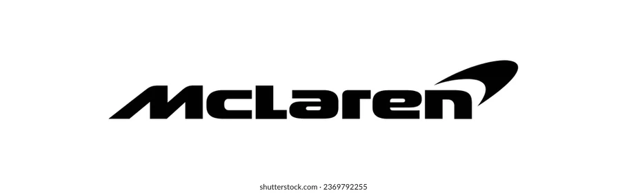
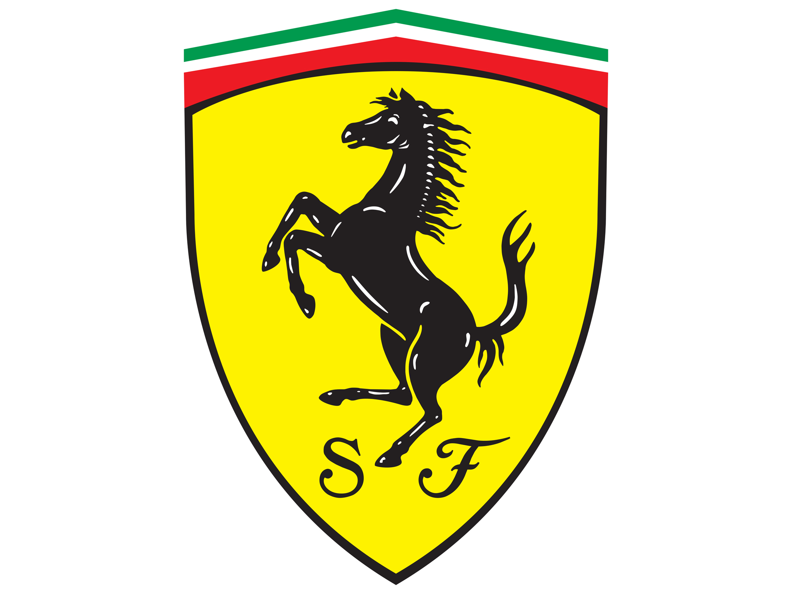

McLaren
McLaren is een vooraanstaand Brits automerk dat bekend staat om zijn hoogwaardige sportauto's en supercars. Met een rijke geschiedenis in de Formule 1, brengt McLaren deze race-ervaring naar de straat met modellen zoals de legendarische McLaren F1 en de indrukwekkende P1. Het merk staat garant voor innovatieve technologie, strakke designs en compromisloze prestaties, waarmee het een icoon is geworden in de wereld van high-performance auto's.
Ferrari
Ferrari is een iconisch Italiaans automerk dat synoniem staat voor passie, snelheid en elegantie. Opgericht in 1939, heeft Ferrari een indrukwekkende erfenis in de autosport en staat bekend om het produceren van luxe sportwagens en supercars. Met kenmerkende ontwerpen, krachtige V12-motoren en een onmiskenbaar rood exterieur, belichaamt Ferrari de perfecte combinatie van prestaties en esthetiek. Het merk heeft wereldwijd een cultstatus bereikt en blijft een symbool van luxe en exclusiviteit.
Porsche

Porsche is een toonaangevend Duits automerk, wereldwijd erkend voor zijn iconische sportwagens en luxevoertuigen. Met een erfgoed dat teruggaat tot de legendarische Porsche 911, staat het merk synoniem voor compromisloze prestaties, innovatief design en Duitse technische perfectie. Porsche heeft zijn sporen verdiend in zowel de autosport als op de openbare weg en blijft een symbool van tijdloze elegantie en rijplezier.